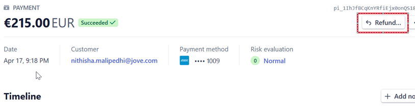
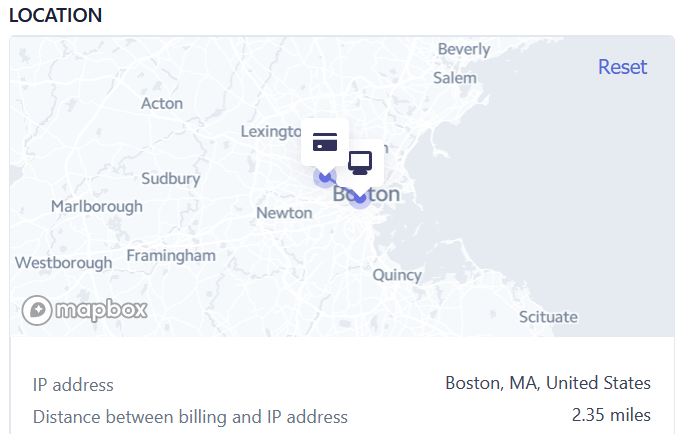

eCommerce - First Order
Leads process
Leads are for now sent by sales@the-network.com.
Possible scenarios:
- Pyament sucessess --> CS to post job & ask Sales to send a lead
- Job written but did not try to pay (dropped) --> Sales to send it as a lead
- Job written and did try to pay, but payment failed --> Sales to reach out to the customer and try to help them to pay following a stripe link. Once sucessful, Sales to send it as a lead
- Customer registered but did not wirte a job and did not try to pay (dropped) --> Sales to send as a lead
CS process flow
- You will be notified in Slack in eComm channel
- Log into Stripe and check the payments for the customer in question (you can see both successes and rejections; in Slack, only successful payments will be displayed)
- People who have login: Julien, Daniel, Katrien, Mila, and Kate
- Do a fraud check (click to see the procedure)
- If all good, continue with the next step
- If bad, do NOT proceed with the listing. Rather, you should
- Change the status of the listing by choosing the action “reject ecommerce listing” (this only changes the status, nothing else is triggered)
- Issue a refund in Stripe (open the payment and click on the refund button) 
- Finance doesn’t need to be informed since the invoice is not issued yet
- Disable the customer in FP, and expire the wallet by changing the dates
- Proceed with the job:
- First, go to the customer tab:
- The customer is created automatically with a timestamp (number), e.g. Customer_ecomm_1618687399348
- You can find it using the customer company name used for the order and rename it into Customer_ecomm
- The public name should be filled in without _ecomm
- Logo is created in FP in black but you can upload the logo from the customer’s website instead
- Posting method selected is Recruiter Application
- You need to choose the selling partner - The Network
- Customer ID: you need to create a new customer in SF first with using '_ecomm' into the customer name:
- Selling partner: The Network
- Add a parent account: eComm
- Billing address is mentioned in the Slack message
- Add the country as SJNWW and the CP as SJNWW standard
- When customer ID inserted, enable the customer
- Channel is already created as email override and standard. It should NOT be delegated!
- Wallet is already created with the credit imported
- Keep the type as TEST (for other types new credit will be imported when syncing)
- In SF, create a SJNWW standard contract for one job. In the field “email sales person”, put cs@the-network.com
- Add the SF contract ID into the SF contract name field
- In Monitoring, you can find the job itself:
- All ecomm listings have status "To Validate"
- You can search the posting by selecting the origin "ECOMM THE NETWORK" (this is a filter you need to add to the search, it does not display automatically)
- The listing has a comment with the customer reference and user name
- The listing content should be already checked during the Fraud check process so you can click on the action 'Post e-commerce listing' --> the job will get associated to the customer and an email will be sent to the receiving partner (and CS mailbox)
- The customer will receive an order confirmation at that moment
- In Users enable the user who was created automatically during the order. They will receive logins to follow up on their job posting.
- Create a PO, validate it and send it to the partner. Reply all to the email with the job listing and inform them about the OUT PO, mention this is ecomm and should be processed with shorter SLA
- Probably, at the beginning, chase fully automated partners to confirm. A reminder is sent automatically after one day
- The user can update or delete the job once they have access (an email with the action will be sent)
- In case the receiving partner refuses the posting or needs additional information, get in touch with the user (customer)
- Confirm to Sales they can send a lead to the rightful outbound partner
- Check with Finance. There will be an invoice created by our accountant (they received the order payment confirmation from Stripe). Send the invoice should to the customer once received
- If the lead was won:
- In SF: the lead should be converted into account or new account to be created by the selling partner
- In FP: if a deal is signed by the selling partner and the customer will use FP, change the selling partner of the customer


How to do a fraud check?
- Stripe check should be already very sufficient. Julien is taking care of its configuration: there are automated verifications performed and configurable in Slack, which Julien can configure as an admin of the Stripe account.
- Still, once logged in Stripe, open the payment and check 'Payments & Review and do a risk evaluation - you need to open the payment to check the details (it has the risk rate):
- We might need to review for fraud payments in between 65 and 74+ from list of restricted countries; all those in payments should be ok, but still do a little check
- Check the card origin and the country origin if they match (i.e. the company address and the origin of the card)
- Potentially you can check if the countries and the IP are the same (but careful as we have Polish API and we are in BE). For example: 
- In addition, with every request received, you should:
- Check the customer website (does it exist, does it look real, if you see contact emails, is the domain the same as the ecomm user contact email, etc.)
- Check the job description content; no illegal things like having to pay to apply, etc. (for this, you need to go to monitoring and find the job; only available in JSON format for now)
- Check that the job description more or less matches with the company profile (while checking their website)
- Give a further 5 min check when the request is coming from Eastern Europe, Ukraine, Russia, China, African countries – we will not block it per default but it would be worthy to maybe cross check the responsible person on LinkedIn (via their email or phone number, check with contact details on the company website if that person really works for the company, etc.)
- If you come across a fraud, you should add it on ‘blacklisted customer’ list (this will have to be still created and will most probably be shared with DE and UK; Julien is going to check for this). And of course do not process the order, but do a refund. If fraud spot late or referred by the receiving partner, cancel what you created in FP and SF as well!
What are our Stripe rules?
- We blocked everything who has risk of 75 or higher
- Automatic blocks from Stripe
- We blocked when we noticed when the email is disposable one (according to Stripes' rules) = Single use email addresses
- We block if IP is anonymous (with the previous e-commerce - OLO - it was also blocked if the IP address was created recently => sign it is a not a real company but created for money laundering)
- We block if users are trying to use the same card more than once per day
- If CVC - credit card number - is missing